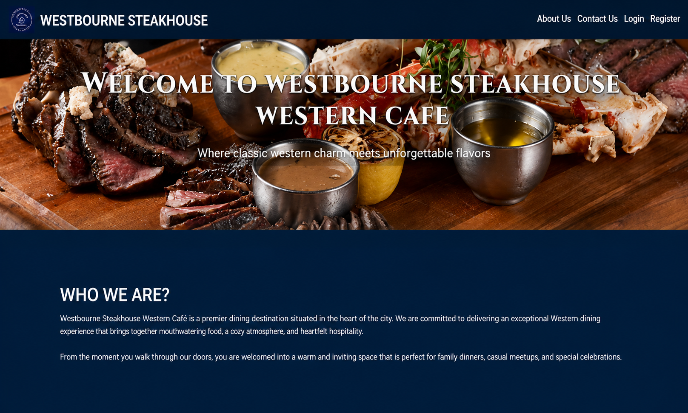

PROJECT DETAILS
Westbourne Smokehouse Cafe System
A web-based cafe management system developed to support online ordering, menu management, reservations, payments, inventory, and customer services.

Project Overview
Westbourne Smokehouse Cafe System was developed as a web-based system to support the daily operations of a cafe and improve the customer ordering experience.
The system includes features for managing menu items, customer orders, reservations, payments, inventory, promotions, feedback, and customer support.
Technologies Used
Key Features
- Online food ordering and cart management.
- Menu and inventory management.
- Customer reservation management.
- Order and payment management.
- Promotions and discount management.
- Customer feedback and support management.
My Contribution
Designed and developed the web-based system, implemented database functionality, developed management features, and worked on the user interface and system functionality.